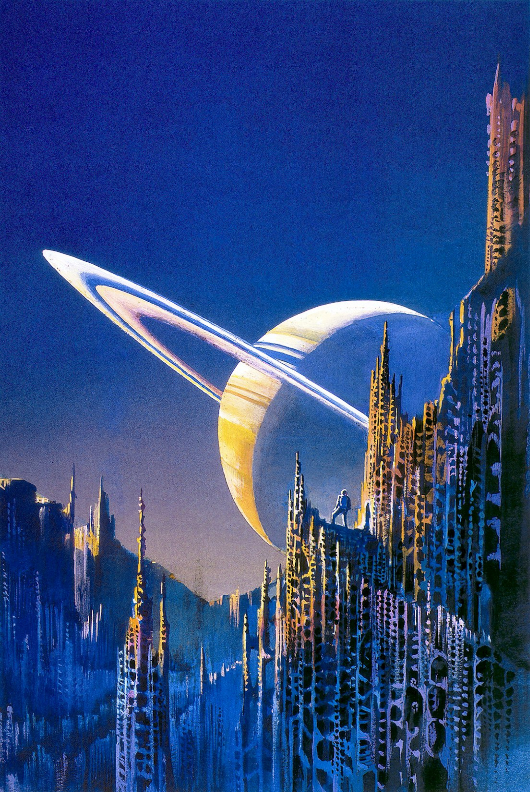

Image Carousel




Bruce Pennington’s artwork is a hallmark of science fiction and fantasy illustration, renowned for its vivid colors, surreal landscapes, and meticulous brushwork that evoke otherworldly realms. His style blends classical painting techniques with speculative themes, creating a timeless yet futuristic visual language. Pennington’s bold use of vibrant pinks, deep blues, and luminous greens infuses his scenes with dreamlike intensity, making alien worlds and fantastical structures feel both tangible and ethereal. His compositions, featuring towering spires, cosmic skies, and desolate terrains, balance surrealism with narrative depth, inviting viewers into imagined futures or mythic pasts. Rooted in traditional paint-and-brush methods, his textured surfaces and harmonious pigment blending, honed at Ravensbourne School of Art, contrast with the sterile precision of digital art, delivering dynamic, authentic visuals. Pennington’s portfolio includes iconic book covers like The Shadow of the Torturer from Gene Wolfe’s The Book of the New Sun, capturing its haunting tone with vivid imagery. His Children of Dune cover for Frank Herbert’s saga evokes epic, desert-strewn grandeur. The Pastel City by M. John Harrison showcases his skill in depicting far-future decay, while Lost Worlds by Clark Ashton Smith is a definitive portrayal of Zothique’s eerie beauty. His “Armoured Horseman” for Flashing Swords #2 became a sword-and-sorcery icon. Graphic albums like Eschatus and Ultraterranium highlight his surreal, cosmic vistas. Pennington’s art, celebrated on platforms like Redbubble, remains a powerful testament to traditional illustration’s ability to spark wonder. .